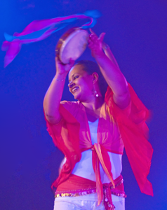

<header id="presentation" class="page"><div class="flex-container"><div class="presentation"><h1>Présentation</h1><section><h3>Dieu utilise la danse orientale pour restaurer la féminité !</h3><ul><li>Développer l’unité entre le corps, l’âme et l’esprit</li><li>Apprendre à accepter notre corps tel que Dieu l’a créé</li><li>Trouver la liberté dans une féminité restaurée et guérie</li><li>Découvrir notre identité en Christ en tant que femme</li></ul><h3>“être pleinement femme, femme de Dieu “</h3></section><hr/></div><div class="wrapper"><div class="la-dance-oriental"><h2>La danse oriental</h2><p>Fille de Dieu, &eacute;pouse, m&egrave;re,... j&acute;ai l&acute;impression que  Dieu veut remettre la femme &agrave; sa place, &agrave; la place pour laquelle elle &eacute;tait  cr&eacute;&eacute;&eacute;. Nous allons ensemble chercher notre place, toujours en fixant notre  regard vers le Seigneur.<br/>Oui la danse orientale peut &ecirc;tre un outil d &acute expression  de louange, car elle exprime surtout la joie de vivre, mais nous, nous  exprimons surtout la joie de vivre avec Celui qui a cr&eacute;&eacute;e la vie&nbsp;! C&acute;est  Lui qui utilise cette danse pour que nous d&eacute;couvrions notre f&eacute;minit&eacute;, pour que nous cherchions au  plus profond de nous-m&ecirc;mes la femme de Dieu que nous sommes.<br/>Il est difficile de trouver cette place dans notre  soci&eacute;t&eacute; o&ugrave; la place de l&acute;homme et de la femme sont tellement confondues et  m&eacute;lang&eacute;&eacute;es.<br/>Dieu nous appelle &agrave; &ecirc;tre restaur&eacute;es. Il cherche &agrave; nous  unifier dans notre corps, &acirc;me et esprit.<br/>Il veut nous lib&eacute;rer, nous purifier et nous  renouveler, nous faire d&eacute;couvrir notre f&eacute;minit&eacute; qu&acute;il a cr&eacute;&eacute;e Lui-m&ecirc;me.<br/>Ensemble, nous allons d&eacute;couvrir les diff&eacute;rentes  facettes de cette f&eacute;minit&eacute;.<br/>La danse orientale est un moyen tellement bien adapt&eacute; &agrave;  cette recherche! La danse orientale est une danse joyeuse et sensuelle,  dramatique et dynamique et beaucoup plus...</p><p>Dans cette danse, l&acute;&acirc;ge et la silhouette n&acute;ont aucune  importance, nous venons devant notre Cr&eacute;ateur telles que nous sommes! <br/>Je  vous invite &agrave; d&eacute;couvrir la technique pr&eacute;cise de la danse orientale. Il m&acute;est  important, d&acute;aider chaque personne &agrave; trouver sa propre expression dans une  danse qui &eacute;tait probablement d&eacute;j&agrave dans&eacute;e  &agrave l&acute;&eacute;poque de J&eacute;sus!</p><p class="text-align-right"> Margarita Fugger-Heesen</p></div><div class="nous"><h3>Qui nous sommes</h3><ul><li>Simra est un nom inspiré par le mot hébreu « Simcha » qui signifie « joie »</li><li>La partie enseignement par les cours et les stages dans le milieu chrétien, existe depuis 2005.</li><li>La compagnie « Simra » a été créée en 2009. Nous sommes des femmes qui dansons avec tout notre cœur pour Dieu et pour toucher les femmes dans leur identité.</li><li>Les cours/stages et la compagnie se veulent être des lieux ’encouragement et d’espérance pour les femmes et nous-mêmes, mais aussi des lieux de remise en question par rapport à la féminité.</li><li>Des femmes précieuses, de différentes églises font partie de Simra-Dance. Elle ont la vision sur leur cœur et soutiennent activement ce ministère.</li><li>Ensemble, nous voulons communiquer l’amour et la liberté de Jésus.</li></ul><p>Nous voulons communiquer la joie et l’amour de Jésus à travers la danse et nos témoignages. Nous croyons que Dieu peut utiliser la danse orientale comme un outil puissant pour la restauration, la guérison et la liberté des femmes (et indirectement des hommes aussi).</p><p>Nous ne sommes pas liées à une église en particulier, puisque à nous toutes nous représentons plusieurs églises locales ; toutefois, nous travaillons étroitement avec Psalmodia. Notre souhait est d’agir plus largement dans une perspective inter-église, tout en restant attentives à être couvertes spirituellement par l’autorité des églises.</p></div></div></div></header>